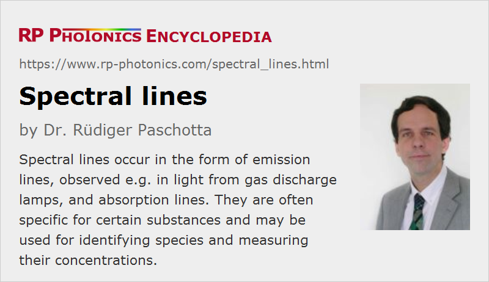

Spectral Lines
Definition: narrow spectral features related to emission or absorption lines of certain substances
More specific terms: standard spectral lines, laser lines
German: Spektrallinien
How to cite the article; suggest additional literature
Author: Dr. Rüdiger Paschotta
For some light sources, such as gas discharge lamps and various lasers, the optical spectrum exhibits clearly defined spectral lines, i.e., narrow spectral features with substantial power spectral density. These are related to transitions of atoms, ions or molecules from some excited state to a lower electronic level. The photon energy hν = h c / λ is close to the difference in level energies, which therefore determines the optical wavelength of the spectral emission line.
Sometimes, discrete emission lines are observed on top of a continuous spectrum.
It also happens that a continuous optical spectrum exhibits discrete dips, which are caused by absorption of light at certain wavelengths. Such absorption lines are also usually related to electronic transitions, this time from lower to higher energy levels. If the lower level is the electronic ground state, it is ground state absorption (GSA), otherwise excited state absorption (ESA). Such absorption lines have been observed, for example, in sun light (Fraunhofer lines, discovered by Joseph von Fraunhofer), and have lead to the discovery of helium before it was found on Earth. Absorption lines can also be studied in laboratories, e.g. with broadband light sources and spectrographs or with scanning laser absorption spectroscopy.
Similar absorption and emission lines are also observed with solid-state media such as laser crystals. Here, however, the absorption and emission features are often substantially broader due to interactions of the absorbing or emitting species with the host material.
Observed absorption and emission lines are often characteristics for certain substances, and can therefore be used as spectral fingerprints, e.g. for the detection of environmental pollutants in the atmosphere. It is also possible to measure concentrations (or number densities) through their relation with the absorption coefficient, using Beer–Lambert law.
There are a number of standard spectral lines which are frequently used as wavelength references, e.g. for the characterization of optical glasses.
Width and Shape of Spectral Lines
Spectral lines always exhibit a finite linewidth, which can have different origins:
- At high gas pressures, collisions are frequent. These lead to collisional broadening (or pressure broadening) of lines. Essentially, the emitting atoms are frequently disturbed by collisions during their radiation, so that the optical phase cannot evolve continuously over longer times.
- There are Doppler shifts due to the thermal movement of the radiating particles. This leads to the so-called Doppler broadening, the magnitude of which depends on the temperature. There are methods of Doppler-free spectroscopy, which largely eliminate the effect of Doppler broadening.
- Even without any movement, there is a natural linewidth, which is limited by the lifetime of the upper state (lifetime broadening).
- As mentioned above, emitting or absorbing atoms or ions in solids often exhibit broadened absorption and emission lines due to interactions with the host material. For example, there can be Stark effects caused by electric fields. If different atoms or ions experience different modifications of line features, the resulting broadening is called inhomogeneous broadening.
The smallest linewidth values – well below 1 Hz – can be achieved with certain forbidden transitions, which can have a very small natural linewidth, when also suppressing various other contributions to the linewidth. Methods of ultra-precise spectroscopy have been developed for such measurements. Extremely small linewidths are also exploited in optical frequency standards for optical clocks. Here, the emission of a laser is stabilized to a narrow spectral line such that the linewidth of the laser is even far below the width of the spectral line.
The line shape, i.e., the shape of the optical spectrum, is often related to the dominant line broadening mechanism. For example, Lorentzian lines are often observed when lifetime broadening is dominant, while Doppler broadening leads to Gaussian line shapes.
The quite narrowband light from certain spectral lines is often regarded as quasi-monochromatic.
Questions and Comments from Users
Here you can submit questions and comments. As far as they get accepted by the author, they will appear above this paragraph together with the author’s answer. The author will decide on acceptance based on certain criteria. Essentially, the issue must be of sufficiently broad interest.
Please do not enter personal data here; we would otherwise delete it soon. (See also our privacy declaration.) If you wish to receive personal feedback or consultancy from the author, please contact him e.g. via e-mail.
By submitting the information, you give your consent to the potential publication of your inputs on our website according to our rules. (If you later retract your consent, we will delete those inputs.) As your inputs are first reviewed by the author, they may be published with some delay.
See also: optical spectrum, wavelength, standard spectral lines, laser lines, spectral lamps, linewidth, Doppler broadening
and other articles in the category general optics
|  |
If you like this page, please share the link with your friends and colleagues, e.g. via social media:
These sharing buttons are implemented in a privacy-friendly way!